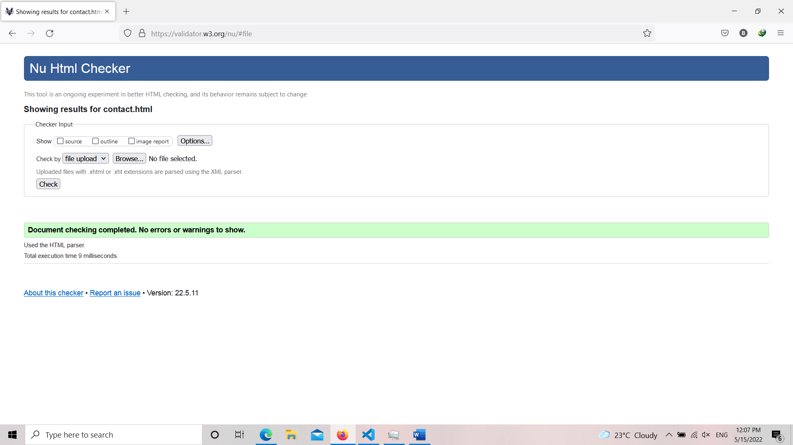
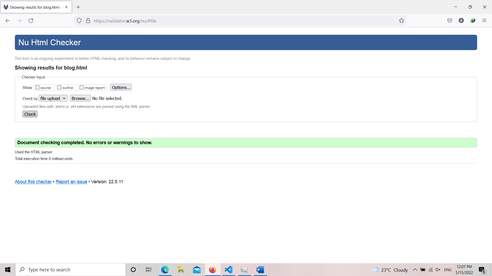

Hello, My name is Bipin Basnet. I am an student in NAMI college. I joined this college to study Bsc.Computing in march. MY UNO ID is 22430017. Here i am going to share my experience of learning the basics of web development, coding, design and debugging process. And I will also be explaining about the web pages i made.
When i first started studying web development I only had the basic idea about what I was gonna learn. At first it was quite confusing and challenging. But as I kept learning I started understanding the topic little by little. Some topics were quite difficult and took quite sometime for me to understand. At first I thought it was qiute easy but by studying it in depth I understood that it was quite challenging. As for the module instructer, he taught us nicely .Coding itself was quite difficult at start but the debugging process was even harder. After 3-4 weeks of studying I started getting familiar with this. Making the page responsive was the challenging task I have done till now while studying this module.
After a while we got our first assignment. The assignment was quite difficult as it was my first assignment. It took me 2 weeks to complete my assignment. While working on my assignment I had many problems. I could not decide the design I was going to use. I probably change the design of the web pages many times but after many attempts I decided to use this design. Choosing the font colors, background colors and background images was also very confusing to me. Designing the navigation bar and making the page responsive was very difficult for me. Navigation bar was difficult because of the hamburger icon. Making hamburger icon appear only on mobile design alone took a long time. Making the page as responsive as possible was also very difficult for me.
Here are the images of valdidation.
 